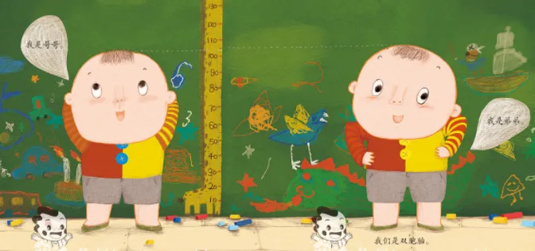
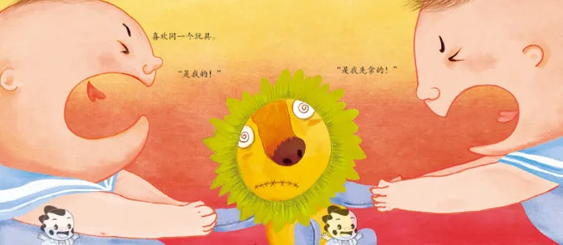
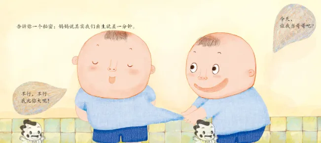

孖仔帮
公众号ID：twinsbang
关注
文|圆圈妈妈
网图|侵删
#先插播一则群通知#：第26期双胞胎跳蚤市场群已开放，公众号输入“赶集26”，扫码即可入群。
圆圈兄弟三四岁那会儿是打架高峰期，憨憨的圆圆经常被贼贼的圈圈逼到一个角落里揍，打不还手，骂不还口，然后一把鼻涕一把泪跑到我面前诉苦，哭到上气不接下气。
我既心疼又气愤。
港真，有那么一瞬间，我是真希望他能打回去，把对方狠狠揍一顿，虽然那个对方也是自己的崽子。
手心手背都是肉，老母亲夹在中间，太难了！
当然，这只是想想而已，再难也得保持老母亲最起码的优雅和理智。
如果今儿个我鼓励他打回去，那就是教他以暴制暴，今后暴力行为的发生只会有增无减。
在一个家庭中，每个孩子都应该是受尊重的个体，而不是强者和弱者的角色。

我意识到，我不能让圈圈一直以为自己有权力欺负圆圆，而圆圆则只能默默忍受。
圈圈是更具攻击性和控制欲的孩子，而圆圆可能更加温和和敏感。在处理这种情况时，我的重点应该在老是被欺负的圆圆，应确保他能够保持自己的尊严和尊重，而不是让他变得依赖圈圈的支配。
原则和立场确定好后，我开始找他们各自谈话。
首先，找施暴者圈圈。
我告诉他：圈儿，不管怎样打人是不对的，即使那人是你的哥哥；你要学会尊重别人的感受和身体。
我还提醒他：圈儿，你和圆圆是兄弟，应该互相尊重和关心，而不是互相伤害；如果你不听劝告，随意释放你内心那个爱打人的小怪兽去欺负你哥，那会挨批评受惩罚的哦。
接着，找受害者圆圆。
我告诉他：圆儿，你是个小小男子汉，要勇敢自信，要学会保护自己。
我还鼓励他：圆儿，你有权利反击，如果圈圈打你或咬你，你可以大声告诉圈圈“不行”，你也可以试着轻轻地推开圈圈，然后马上离开，而不是缩在角落里一直被圈圈打。
除此之外，我还多做了一件事情，那就是保证兄弟俩都有自己的空间和私人时间。
我给他们买了上下床，让他们各自睡自己的床（条件允许的家庭，最好是分开两个卧室，或者一个大卧室，两人的床放在不同角落），允许他们轮流跟大人一起睡，约好每周一三五是圆圆与爸爸妈妈的被窝时间，周二四六则轮到圈圈。
还给他们准备了各自的收纳柜，存放属于自己的玩具和书籍，帮助他们感受到自己的独立性和自我价值，从而减少他们之间的争吵和矛盾。
在不断尝试和探索之后，两兄弟之间的关系有了明显的改善，圈圈开始更多地关注圆圆的感受，而圆圆也变得更加自信和坚定，开始学会保护自己。
但圈圈生气起来还是会忍不住动手打人，圆圆还是挨揍的份，但他已经知道会逃跑了...
这是个很大的进步。
于是，我开始尝试改变自己的教育方式，比如鼓励兄弟俩在冲突中学会合作、沟通和妥协。
我从互动游戏开始，教育他们学会合作和分享。我发现，通过让他们一起完成任务，他们会感到更亲近，并且开始学会以积极的方式相处。
另外，我也开始教导他们如何表达自己的情感。我告诉他们，如果感到不开心或者生气，他们应该表达出来，而不是用暴力的方式解决问题。我也鼓励他们彼此沟通，相互理解对方的立场和感受。
才三四岁的孩子，这样的引导和鼓励，我日复一日，年复一年，说了一遍一遍又一遍...
我努力做了这么多，有效果吗？
当然有！
我注意到，每次圈圈打完圆圆后，不再是胜利者的姿态，而是心虚内疚的表情瞅着他哥，低头怯怯地不敢看我；有时候看到圆圆被自己打受伤哭泣，他本人哭得比受害者还伤心。
他已经逐渐意识到打人是错误的行为，而且挨打的那人还是他哥，他最爱的哥，他恨透了内心的情绪小怪兽，他已经自责到无地自容，很想找个地洞转进去。
光凭这一点，我认为，我的努力是没有白费的。
现在的圆圈兄弟，快8岁了，还是一如既往地打架，但不同的是，圆圆再也不憨憨了，他懂得还手了，还知道怎么漂亮地打回去；而圈圈再也没那么贼了，瘦小的他早已没了优势，有时还会沦为手下败将。
他们现在的打架实力旗鼓相当，开战起来不分胜负，再也没有强者和弱者之分，有的只是自我主张，忍耐，协商，妥协，战术，和解...
我也渐渐退出了引导者的角色，把这个硝烟弥漫的战场还给两位小爷。

打架，是男孩们的必修课。
而且，我相信他们，打架这事，知分寸，懂进退，我一个中年老妇女就不参合了。
手足之间的关系是一个长期的建设和维护过程。
矛盾和摩擦在所难免，但我们可以通过不断地引导和鼓励，让孩子们慢慢学会尊重彼此，关心彼此，并在共同成长的过程中建立一个属于手足之间的相处模式。
所以，当你看到双胎之一总是被欺负又不懂还击时，别太焦虑，也别反应过度。
孩子们需要时间，需要一个过程！
只要别强化他是强者或弱者的角色，其他的都可以慢慢去引导。
最后，我想补充一点，对于年龄较小的双胞胎，我们可以采用一些互动游戏的方式来促进孩子们之间的友好相处。比如，一起做手工、画画、唱歌、搭积木等，让他们一起参与，共同完成一个任务，享受一起合作并获得成功的快乐，这样可以培养他们的合作意识，增加彼此之间的互动和沟通，同时也可以让孩子们感受到家庭的温暖和亲情。
这一招，屡试不爽，适合所有双胞胎家庭。
-END-
微信公众号：孖仔帮
ID : twinsbang
专注双胞胎孕育，养育，教育经验分享
扫码关注我们
点一下你会更好看耶

